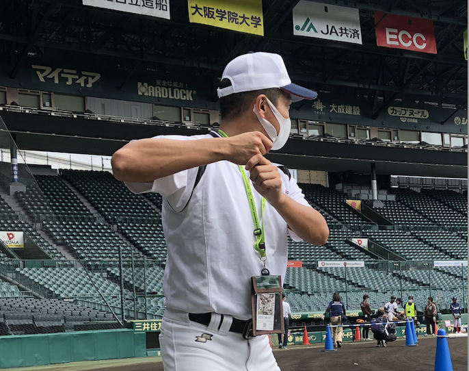
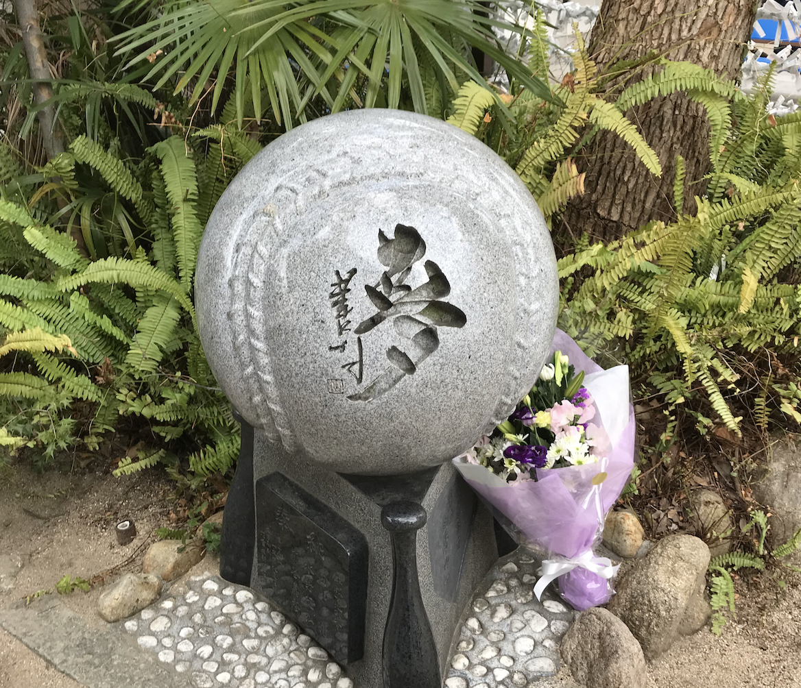
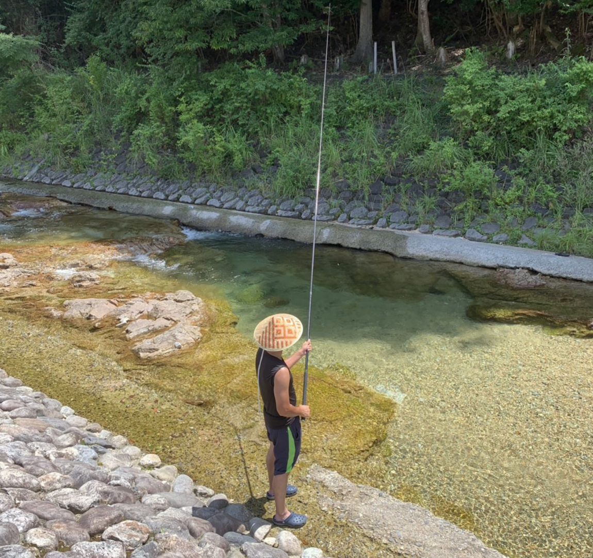
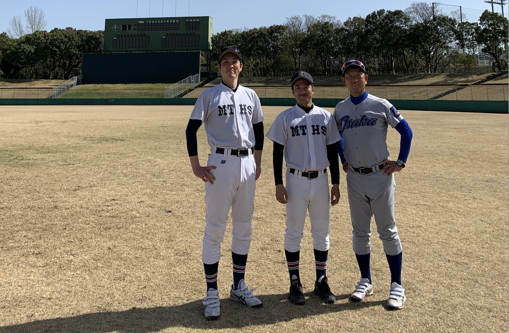

Daiki Endo's ~Profile~

〜自己紹介〜
名 前：遠藤 大樹 生年月日：1989年9月25日(31歳/2021年6月現在) 好きな食べ物：ラーメン 好きな球団：阪神タイガース 座右の銘：「最後に笑う」

〜経歴〜
高校時代は野球と勉強に明け暮れる 最終学歴：日本大学文理学部教育学科 大学卒業後、単身大阪へ 大阪市内で高校教員として9年間働く 2012年〜2015年 大阪学芸中等教育学校 2015年〜2021年 大阪市立都島工業高等学校 部活動は硬式野球部を担当（部長）

〜エンジニアとして目指すもの〜
「人の喜びを創る」 「働き方を変えるようなシステムを作りたい」 「常に挑戦をし続けていきたい」 「誰からも頼られるエンジニアになりたい」 「コーチング×プログラミング×筋トレ×サウナで日本を明るくしたい！」

〜趣味〜
・筋トレ(毎朝ジムに通っています) ・サウナ(サウナーです) ・登山(最近はじめました) ・読書(月10冊以上は読みます) ・高校野球(毎年甲子園球場へ行っています) ・プログラミング(新しい知識を勉強中です)
〜特技〜
・筋トレ ・野球 ・仕事 ・コーチング ・喋ること、伝えること

〜現在の想い〜
大阪で出会った多くの人たちに、新たなスタートを応援してもらいました。 いまは、応援してくれている人たちに対して
感謝の気持ちを持って生活しています。 色んな人たちとの出会いがあったからこそ
いまこうして目標を持って行動しています。 「人の喜びを創る」をモットーに
今後の人生を突き進んでいきたいです！